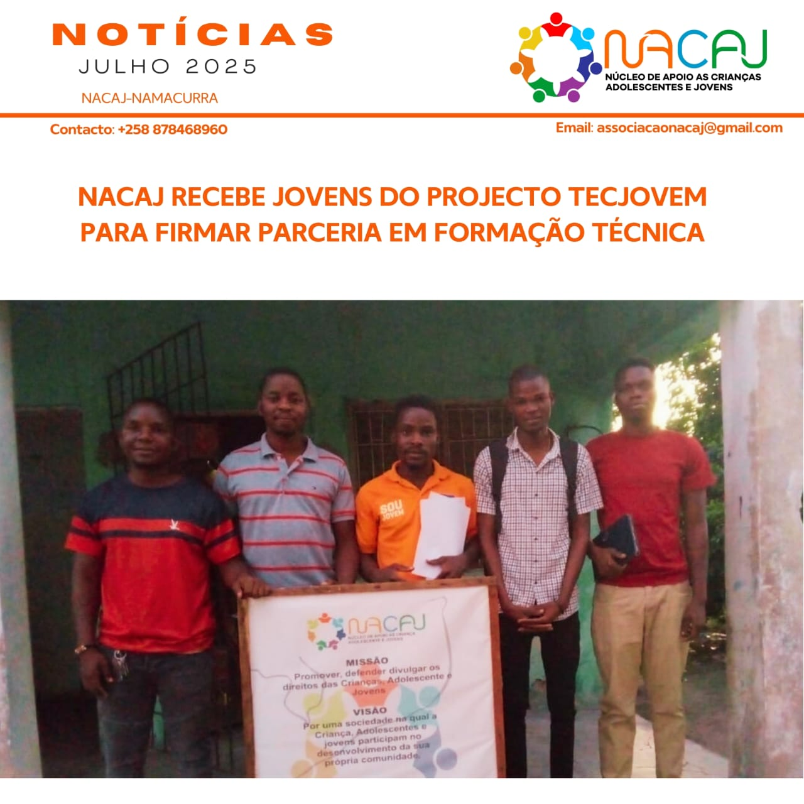
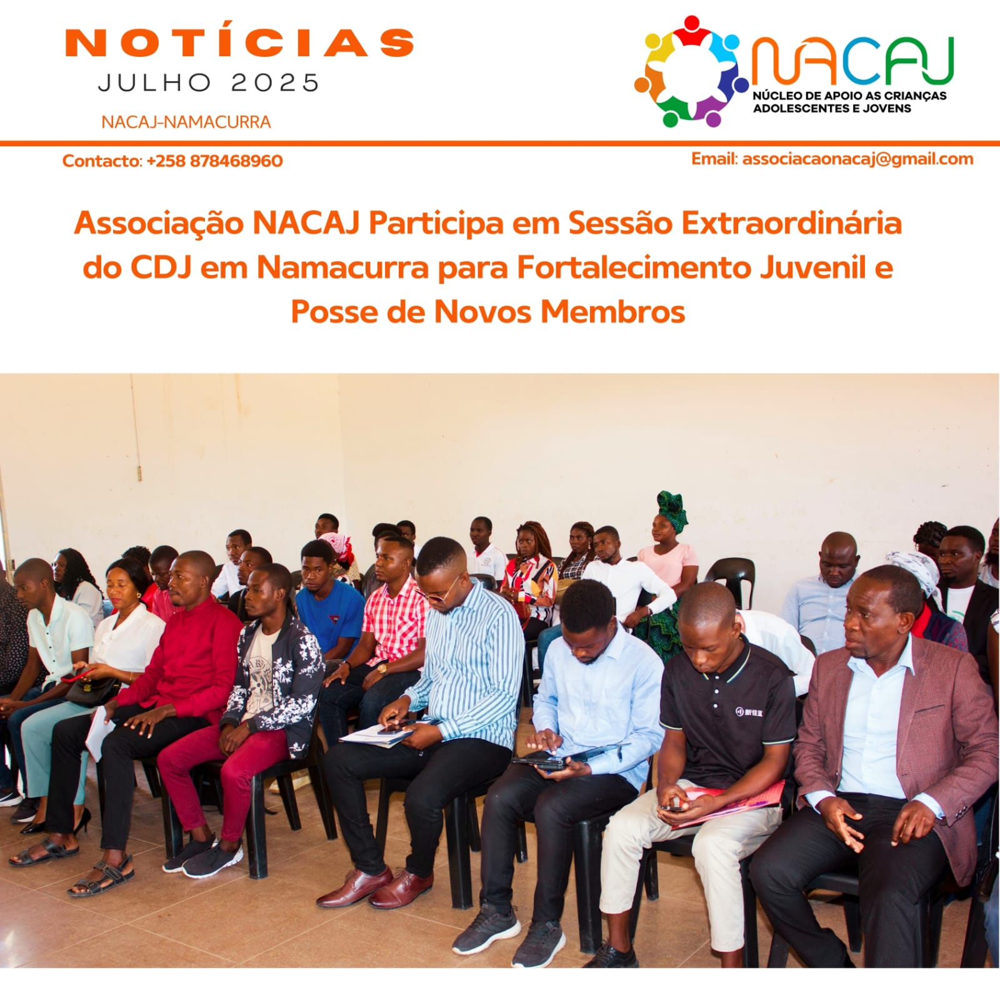
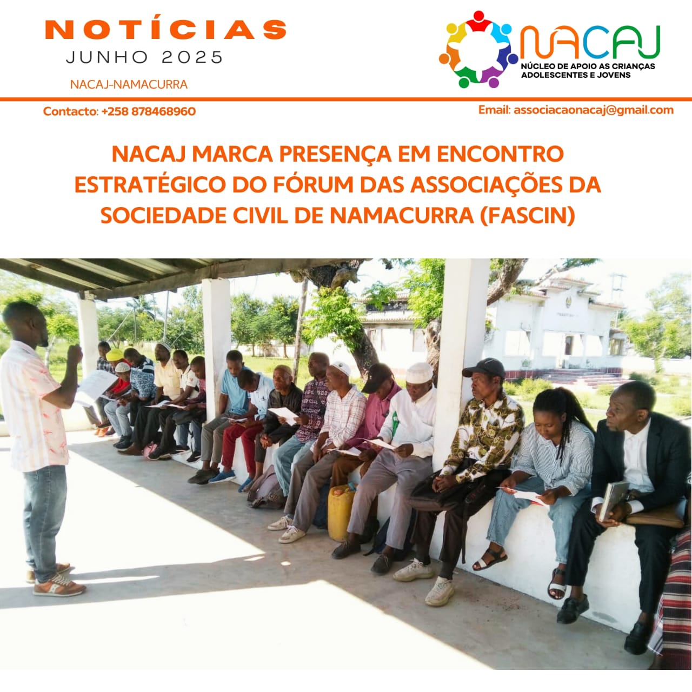
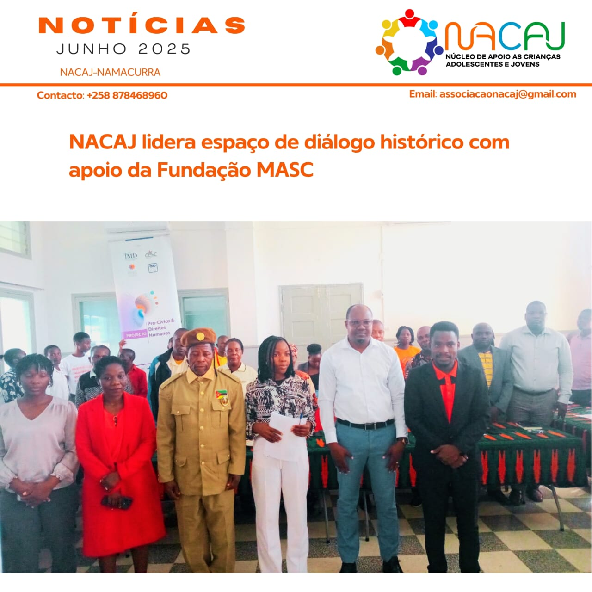
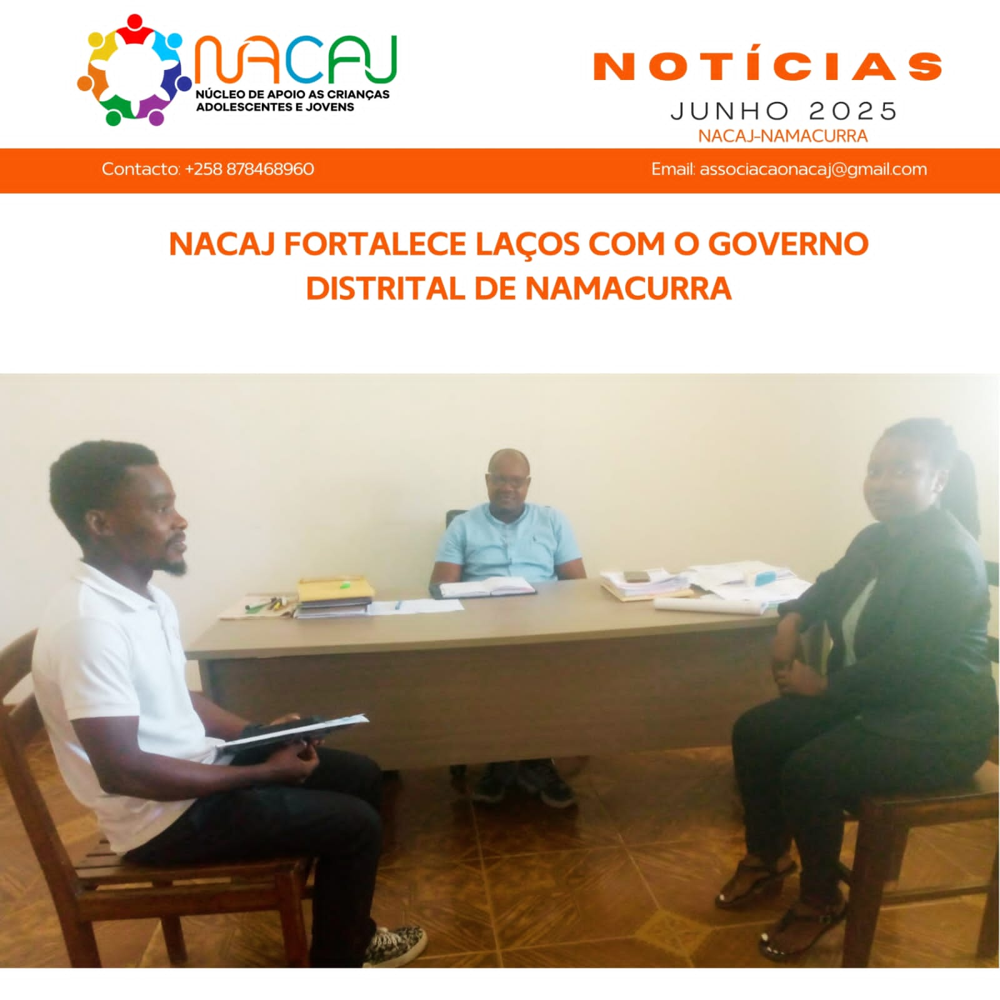
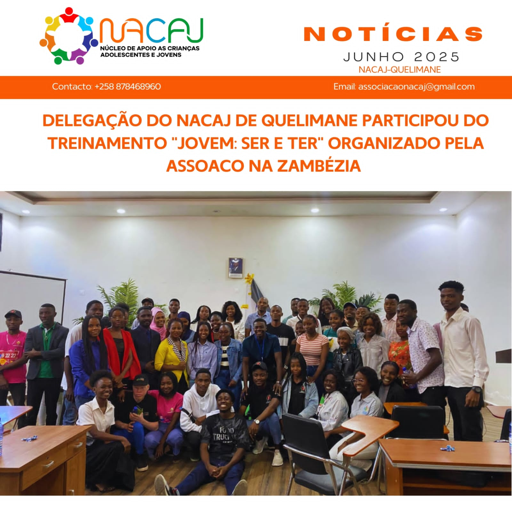

FASCIN RECEBE CARTA DE SUBSÍDIO EM CERIMÓNIA HISTÓRICA...

NACAJ e AEUL promovem capacitação sobre liderança...

NACAJ RECEBE JOVENS DO PROJECTO TECJOVEM PARA FIRMAR PARCERIA...

ASSOCIAÇÃO NACAJ PARTICIPA EM SESSÃO EXTRAORDINARIO DO CDJ EM NAMACURRA...

NACAJ MARCA PRESENÇA EM ENCONTRO ESTRATÉGICO DO FÓRUM DAS ASSOCIAÇÕES DA...

COMUNIDADE E GOVERNO SE ENCONTRAM EM NAMACURRA PARA...

NACAJ FORTALECE LAÇOS COM O GOVERNO DISTRITAL DE NAMACURRA...
